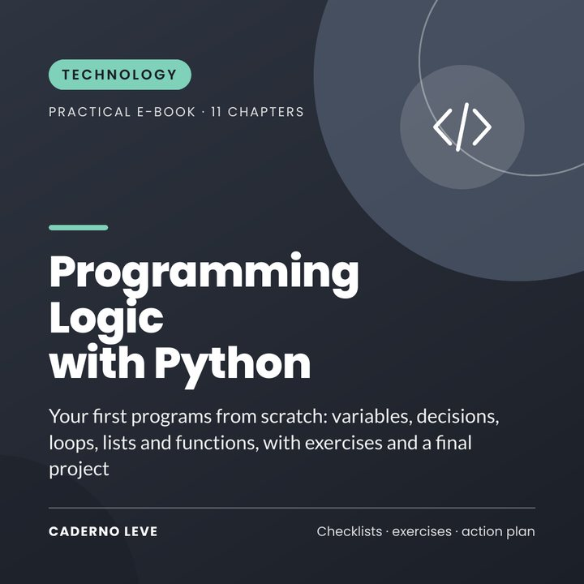

Programming Logic with Python
Learn programming logic from scratch with Python: variables, decisions, loops, lists, functions, common errors and an expense-tracker project.
This e-book will be available to buy very soon.
Secure payment and PDF delivery by Kiwify
Price in Brazilian reais (BRL). The checkout shows the amount in your currency.
Always wanted to learn to program, but found it hard? Start with the logic, with simple examples.
Programming Logic with Python teaches, from scratch, how to think in steps and write programs in Python 3.
Every chapter has examples to type and understand: variables, operations, if, for, while, lists, functions, dictionaries, error handling and a final expense-tracker project.
What you’ll gain
- From scratch, no prerequisites
- Commented code examples
- Common-errors table
- Complete final project
- Challenges to practise
What’s inside
- Chapter 1Setting up the environment
- Chapter 2Logic before code
- Chapter 3Variables and types
- Chapter 4Operations and text
- Chapter 5Decisions with if
- Chapter 6Loops: while and for
- Chapter 7Lists
- Chapter 8Functions
- Chapter 9Dictionaries and common errors
- Chapter 10Project: expense tracker
- Chapter 11Next steps
- ExtraSummary and action plan to put it into practice
- ExtraPrintable worksheet and checklist
Who it’s for
- Absolute beginners in programming
- Students and career changers
- Anyone who wants to automate tasks
Who it’s not for
- Not an advanced course
- No affiliation with the Python Software Foundation
Bonus: “My programming diary” worksheet — track your practice and plan your project.
Important notice
This e-book is educational and independent. It has no connection with, sponsorship from or approval by any company mentioned; trademarks belong to their owners. Digital tools change frequently: screens, button names and plans may look different when you read this. Always check important information.